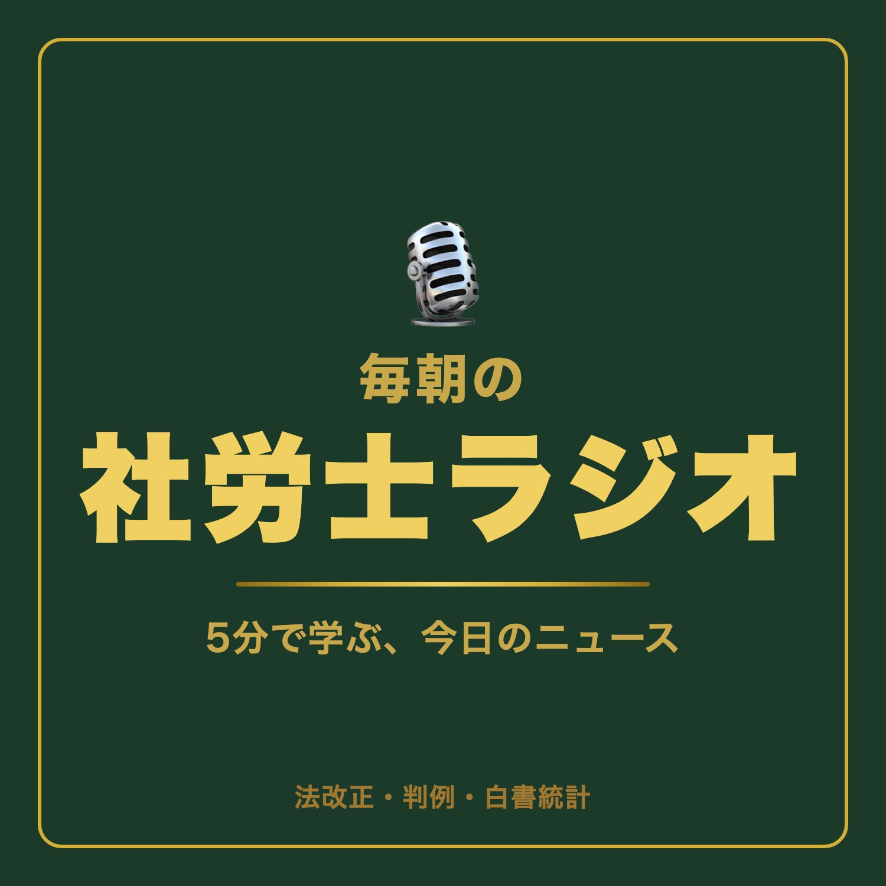

毎日5分の社労士ラジオ
法改正・判例・白書を毎日5分で。社労士受験生のための朝の習慣。
📡 RSS: feed.xml
2026/6/8 教育訓練給付80%へ拡充／ハマキョウレックス事件・手当の個別判断／出生率1.14・過去最低
2026-06-08 ・ 6:31
2026/6/7 障害者の法定雇用率2.7%へ／定年後再雇用の賃金（名古屋自動車学校事件）／最低賃金1,121円
2026-06-07 ・ 4:27
2026/6/7夜 106万円の壁撤廃（10月）／日本郵便事件・非正規格差／実質賃金+1.9%
2026-06-07 ・ 7:02
2026/6/6 育児・介護休業法の改正／職種限定合意と配置転換（最判令6.4.26）／年次有給休暇取得率66.9%
2026-06-06 ・ 4:42
2026/6/6 カスハラ対策の義務化／定額残業代の有効性／労働経済白書・2024年の雇用情勢
2026-06-06 ・ 4:54
※内容は収録時点の法令にもとづきます。手続き・判断は最新の条文と専門家の確認を。